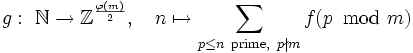

Conjecture: Let m be an integer greater than 2, and let f be a bijection from the set of prime residue classes (mod m) to the set B of the elements of the canonical basis of Zφ(m) and their additive inverses. Then the mapping

is surjective if and only if φ(m) is less than or equal to 4. Furthermore if it is surjective, then all preimages are infinite.
(Compare with Dirichlet's Prime Number Theorem and the Shanks - Renyi Race Problem.)
The menu on the right provides access to graphical visualizations of some examples. There is also a short description of these images.